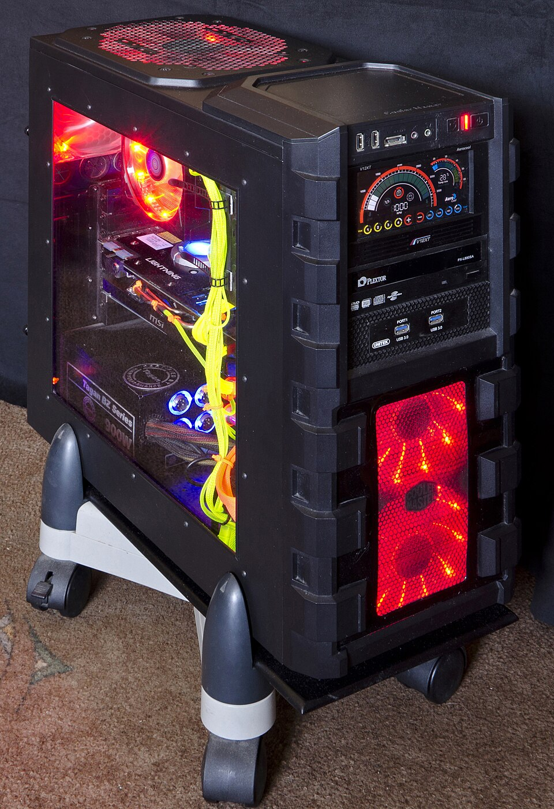

Estructura y componentes del sistema
Un sistema informático se compone de una jerarquía de componentes que trabajan en conjunto: la unidad central de proceso (CPU), la memoria interna, los dispositivos de entrada/salida y el almacenamiento. Entender cómo colaboran es la base de la arquitectura de computadores.

1. Microprocesador (CPU)
El cerebro del sistema. Elementos clave:
- Set de instrucciones (ISA): conjunto de operaciones que la CPU entiende (x86, ARM).
- Registros: memoria ultrarrápida interna de la CPU para datos y direcciones.
- Contador de programa (PC): registro que apunta a la siguiente instrucción a ejecutar.
- Unidad Aritmético-Lógica (ALU): realiza operaciones matemáticas y lógicas.
- Interrupciones: señales que detienen temporalmente la CPU para atender eventos prioritarios (E/S).

2. Ciclo de instrucción
La CPU ejecuta repetidamente: fetch (buscar), decode (decodificar), execute (ejecutar), writeback (escribir resultado). La segmentación (pipeline) solapa estas fases para mayor rendimiento; los núcleos e hilos (SMT/HyperThreading) permiten paralelismo.
3. Memoria interna
Jerarquía por velocidad/capacidad: registros > caché (L1/L2/L3) > RAM. La RAM es volátil y rápida; almacena datos y programas en ejecución. Existen ROM/xPROM (Bellas de solo lectura, firmware) y tipos como DDR4/DDR5.
| Tipo | Volatilidad | Velocidad | Uso |
|---|---|---|---|
| Registros | Sí | Máxima | CPU interna |
| Caché | Sí | Muy alta | CPU |
| RAM (DDR5) | Sí | Alta | Programas en ejecución |
| ROM/xPROM | No | Baja | Firmware/BIOS |
4. Interfaces de entrada/salida y discos
- E/S: puertos y controladores que conectan periféricos (USB, PCIe, SATA).
- Discos: HDD (magnético), SSD SATA, SSD NVMe (PCIe, mucho más rápido). Los periféricos y adaptadores se tratan en el contenido 03.
flowchart LR MEM[RAM] --> CPU[CPU] CPU --> ALU[ALU] CPU --> REG[Registros] CPU -->|Fetch| MEM ESO[E/S] --> CPU
mindmap
root((Sistema))
CPU
ALU
Registros
PC
Memoria
RAM
Caché
ROM
E/S
USB
PCIe
5. Componentes de un sistema informático
En conjunto: CPU + memoria + placa base + almacenamiento + fuente + periféricos forman el equipo completo. Su correcta interconexión es el criterio RA1-a.
Ejemplo resuelto en clase
Caso práctico: Describir la estructura de un equipo dado.
- Enumera las unidades funcionales: entrada (teclado/ratón), salida (pantalla/impresora), proceso (CPU), almacenamiento (disco).
- Abre el administrador de dispositivos y confirma que no hay controladores con fallo (sin signo de admiración amarillo).
- Identifica la memoria (RAM) y la memoria de masa (SSD/HDD) como componentes separados.
- Explica la jerarquía de memoria: registros → caché → RAM → disco (de más rápida/menor a más lenta/mayor).
graph TD E[Entrada] --> CPU[CPU] CPU --> S[Salida] CPU --> RAM[RAM] RAM --> DISCO[Disco]
Ejercicio para resolver (que propone el profesor al alumno): El alumno entrega un listado del equipo clasificado en unidades funcionales y su jerarquía de memoria.
Ampliación de contenido
Para entender lo anterior (puentes conceptuales)
- El ordenador es una "fábrica de instrucciones". Todo lo que hace la máquina se reduce a ejecutar millones de instrucciones simples (sumar, comparar, mover datos). La CPU es esa fábrica; el resto son almacenes (memoria) y transportes (bus).
- Velocidad vs capacidad: la gran compensación. Cuanto más rápida es una memoria, menos capacidad tiene y más cara es. Por eso existe la jerarquía: registros (rápidísimos, poquísimos) → caché → RAM → disco. Entender esto explica por qué no ponemos todo en registros.
- "Interna" significa "dentro del chip o de la placa". Memoria interna = la que la CPU ve directamente (RAM/caché); la externa es el disco duro, al que se accede por controladores, más lento.
Para profundizar en los contenidos actuales
ISA y compatibilidad de software. El set de instrucciones (x86-64, ARMv8/AArch64) es el "idioma" de la CPU. Un programa compilado para x86 no corre nativo en ARM sin recompilación o emulación. Por eso mismo sistema operativo puede requerir versiones distintas según la CPU.
Ciclo fetch–decode–execute y el pipeline. La segmentación divide la CPU en etapas; mientras una instrucción se ejecuta, la siguiente se decodifica y la siguiente se busca. Eso eleva el rendimiento, pero introduce riesgos (hazards): si una instrucción depende del resultado de la anterior, el pipeline se vacía (burbuja) y hay penalización. Los núcleos (cores) y los hilos (SMT/HyperThreading) permiten ejecutar varias instrucciones a la vez compartiendo la unidad.
Jerarquía de memoria y localidad. La caché (L1/L2/L3) funciona porque los programas tienden a reusar datos recientes (localidad temporal) y vecinos (localidad espacial). Al acertar (cache hit) se ahorra ir a RAM; al fallar (cache miss) se paga la latencia. Por eso L1 es pequeña y rapidísima, y L3 más grande y algo más lenta.
Volatilidad y persistencia. La RAM se borra al cortar la corriente; la ROM/xPROM guarda el firmware (BIOS/UEFI) de forma permanente. DDR4/DDR5 son estándares de la RAM: "DDR" = doble tasa de transferencia (transmite en ambos flancos del reloj); DDR5 duplica canales y ancho de banda frente a DDR4.
E/S y el papel de las interrupciones. La CPU no "pregunta" cada milisegundo si el teclado fue pulsado; el dispositivo interrumpe a la CPU, que guarda su estado y atiende el controlador. Este mecanismo es la base de la multitarea y de que el equipo responda sin bloquearse.
Revisión didáctica
- CPU ≠ equipo. La CPU procesa, pero sin RAM, placa y alimentación no es un sistema. Error frecuente igualar "ordenador" a "procesador".
- Registros, caché y RAM son memoria, pero no lo mismo. Los registros están dentro del núcleo (los más rápidos); la caché está en el chip pero fuera del núcleo; la RAM está en la placa. Cada uno con distinto acceso.
- ROM no es "memoria interna de usuario". Es firmware de solo lectura/reescritura controlada, no donde guardas tus archivos.
- Pipeline no es "más CPUs". Es solapar fases en la misma CPU; mejora el flujo, no añade núcleos (esos son los cores).
- Interrupción ≠ virus. Es un aviso hardware normal para atender E/S; no confundir con un fallo.
Hilo de aprendizaje sugerido: (1) ¿qué es un sistema? → (2) la CPU y sus registros → (3) el ciclo de instrucción → (4) jerarquía de memoria (registros/caché/RAM/ROM) → (5) E/S e interrupciones → (6) ensamblaje del equipo completo. De lo más interno (registro) a lo más externo (periférico).
Enlaces relacionados
Recursos externos
Vídeos y artículos recomendados para ampliar y preparar el tema: